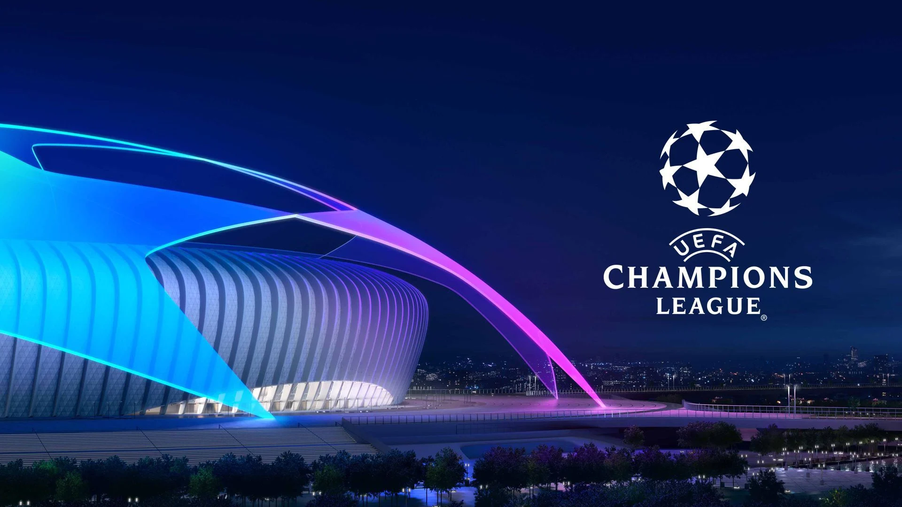

The UEFA Champions League did not fail to deliver in the 2021/21 season,
and this has football fans already looking forward to the prestigious
European competition taking place during the 2022/23 campaign.
UPDATE 7th November 2022:
The Champions League Last 16 fixtures have been revealed. Here they are
in full (gathered from the official UEFA website ).
When will the Champions League Last 16 Fixtures be played? :
For those wondering, the first legs of the Round of 16 games will be played on Tuesday 14th February – Wednesday 15th 2023 and Tuesday 21st February – Wednesday 22nd February 2023. The second legs will be played across Tuesday 7th March – Wednesday 8th March 2023 and Tuesday 14th March – Wednesday 15th March 2023.
Knockout phase:
Round of 16:14th/15th/21st/22nd February & 7th/8th/14th/15th March 2023
Quarter-finals:11th/12th & 18th/19th April 2023
Semi-finals:9th/10th & 16th/17th May 2023
Final:10th June 2023
Champions League 2022/23 Draw
Football fans love the draws in cup competitions and we get a lot of draws in the Champions League as we go through the rounds.